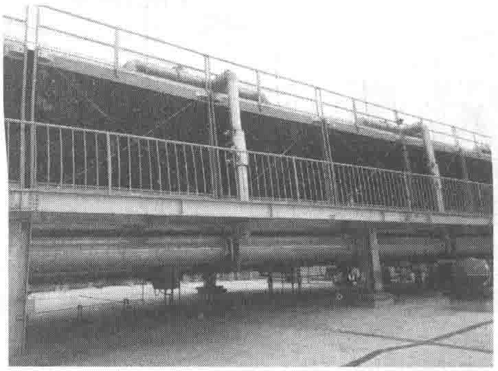
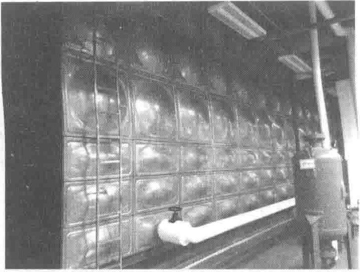
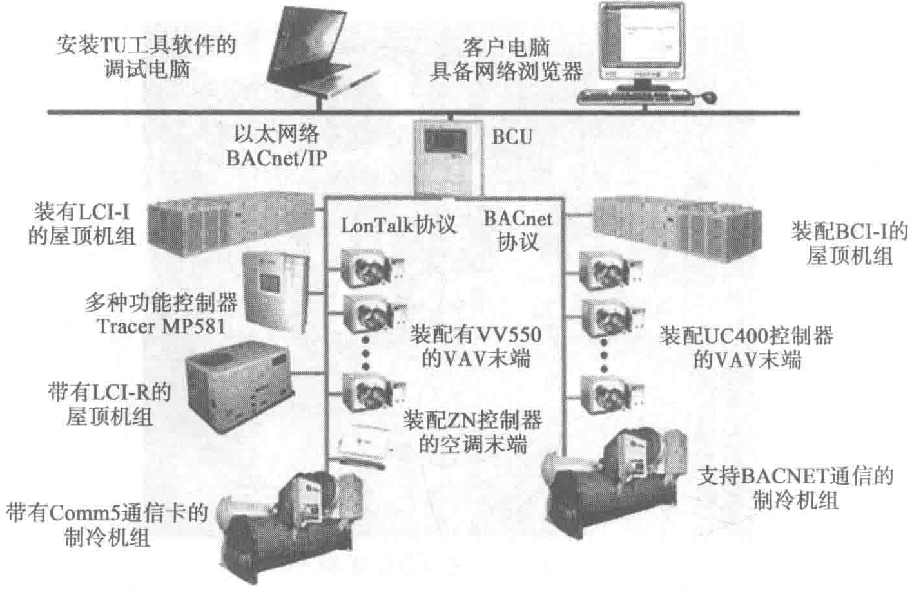

通过环路连接，故二者不必一一对应，设备运行平台数的变化和启停可分别独立控制。机组可根据末端负荷的变化，调节负荷侧和冷水机组蒸发器侧的流量，从而最大限度地降低变频水泵的能耗。
冷却塔设备置于数据中心屋面，如图10-35所示，为多模块组合单元，按需启停，运行方式更灵活。为保证供水可靠性，冷却水蓄水箱（见图10-36）可提供持续8h的补水水源。


5. 冷源控制系统
为了使自控系统与设备有更好的匹配性，本项目中的冷源控制系统由冷水机组厂家提供与机组相适应的控制器和软件。监控系统由UPS和市电双路供电，保障运行安全性。
系统架构如图10-37所示，系统网络结构模式为分布式控制，由管理层网络和监控层网络组成。
